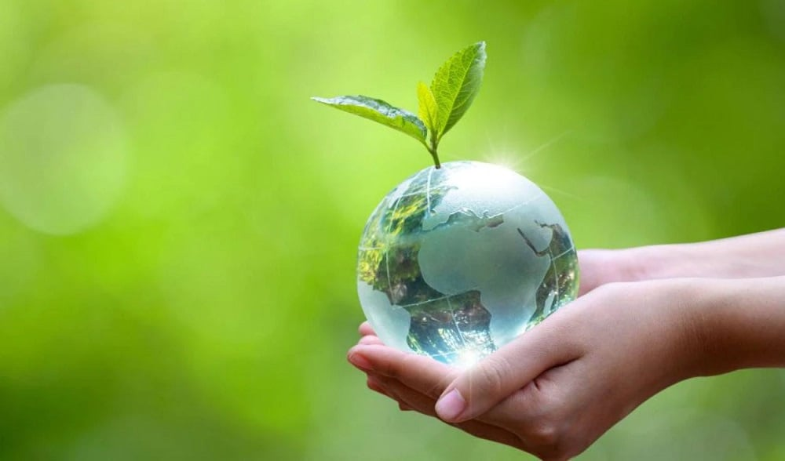

Contáctanos: +52 999 926-3333
Los Objetivos de Desarrollo Sostenible son un llamamiento a la acción de todos los países para promover la
prosperidad y proteger el planeta. Además, explican cómo podemos proteger nuestro medio ambiente y frenar
el cambio climático, desde los bosques hasta los océanos y en todos los lugares intermedios.
Entonces, United Nations nos brinda algunas acciones para reducir tu
impacto en el medio ambiente.
¿Sabías que la electricidad que utilizas funciona con carbón, peróleo y gas?
United Nations declara
que puedes seguir las siguientes acciones para ahorrar energía en casa: reduce el uso de calefacción y
refrigeración, cambia a bombillas LED y electrodomésticos de bajo consumo, además lava tu
ropa con agua fría o colgando cosas para que se sequen en lugar de usar la secadora.
Mejora la eficiencia de tu hogar a través de un mejor aislamiento.
¿La energía de tu hogar proviene del petróleo, el carbón o el gas?
Si es posible, cambia a fuentes renovables como la eólica o la solar. También existe la opción de
instalar paneles solares para generar energía para tu hogar. Cambiar tu casa de energía alimentada
con petróleo, gas o carbón a fuentes de energía renovables, como la eólica o la solar, puede reducir
tu huella de carbono hasta en 1,5 toneladas de CO2e por año.
En las carreteras de la ciudades siempre hay vehículos, la mayoría de ellos quemando diésel o gasolina. Al caminar o andar en bicicleta en lugar de conducir puedes reducir las emisiones de gases de efecto invernadero, además de ayudar a tu salud y a tu estado físico. Para distancias más largas, considera tomar un tren o un autobús. Vivir sin coche puede reducir tu huella de carbono hasta en 2 toneladas de CO2e al año en comparación con un estilo de vida en coche.
Si estás pensando en comprar un vehículo, considera la posibilidad de optar por el eléctrico, con más modelos y más baratos en el mercado. En muchos países, los coches eléctricos ayudan a reducir la contaminación del aire y causan significativamente menos emisiones de gases de efecto invernadero. Cambiar de un coche de gasolina o diésel a un vehículo eléctrico puede reducir tu huella de carbono hasta en 2 toneladas de CO2e al año. Un vehículo híbrido puede ahorrarte hasta 700 kilogramos de CO2e al año.
¿Sabías que los aviones producen importantes emisiones de gases de efecto invernadero?
Tomar menos vuelos es una de las formas más rápidas de reducir tu impacto ambiental.
En lugar de viajar en avión, reúnete virtualmente, toma un tren o sáltate ese viaje de larga distancia
por completo.
Los productos electrónicos, la ropa, los plásticos y otros artículos que compramos
provocan emisiones de carbono en cada punto de la producción. Para proteger el clima,
compra menos cosas, compra de segunda mano y repara lo que puedas. Comprar menos ropa nueva, y
otros bienes de consumo, también puede reducir tu huella de carbono.
Cada kilogramo de textil producido genera alrededor de 17 kilogramos de CO2e.
Comer más verduras, frutas, cereales integrales, legumbres, frutos secos y semillas, y menos carne y productos lácteos, puede reducir significativamente tu impacto ambiental. Cambiar de una dieta mixta a una vegetariana puede reducir tu huella de carbono hasta en 500 kilogramos de CO2e al año.
Al tirar comida desperdicias los recursos y la energía que se requirieron para cultivarla, producirla, empaquetarla y transportarla. Y cuando los alimentos se pudren en un vertedero, producen metano, un poderoso gas de efecto invernadero. Mejor evita el consumismo y compra solo lo que necesitas. Reducir el desperdicio de alimentos puede reducir tu huella de carbono hasta en 300 kilogramos de CO2e por año.
United Nations dice que si tienes un jardín o incluso una o dos plantas fuera de tu casa, busca especies nativas. Nos aconseja usar una aplicación de identificación de plantas para ayudar. Luego piensa en reemplazar a los no nativos, especialmente a los que se consideran invasores.
Todos los seres vivos sufren debido a la contaminación de la tierra y el agua por la basura desechada incorrectamente. Nuevamente, evita el consumismo y cuando tengas que tirar algo, deséchalo adecuadamente. Educa a otros para que hagan lo mismo y participa en limpiezas locales de parques, ríos, playas y más.
Solo tú decides a qué bienes y servicios apoyar, pero asegúrate de elegir productos de empresas que utilicen los recursos de manera responsable y se comprometan a reducir sus emisiones de gases y residuos. Asegurarse de que tus ahorros se inviertan en negocios ambientalmente sostenibles puede reducir en gran medida tu huella de carbono.
Otra opción es alzar la voz y concientizar a otros para que empiecen a actuar.
Habla con tus vecinos, colegas, amigos y familiares. Haz saber a los dueños
de negocios que apoyas cambios audaces, desde productos y envases sin plásticos
hasta vehículos de cero emisiones.
La acción climática es una tarea que nos concierne a todos.
Para obtener más información detallada, visita el sitio de United - Nations, podrás encontrar informes, artículos y diversos materiales.
United Nations. (s. f.). Actions for a healthy planet | United Nations. https://www.un.org/en/actnow/ten-actions